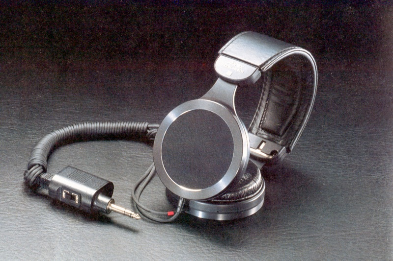
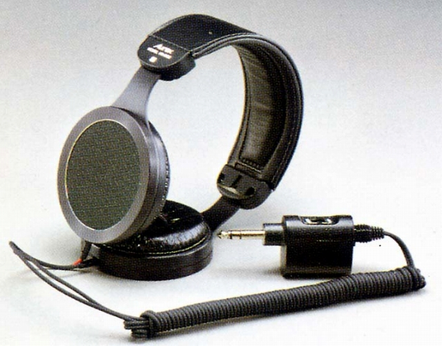
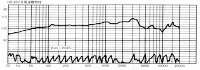

HR-810�U


■価格 12,000円■型式 エレクトレットコンデサー型■振動板 51�o径2.5ミクロン厚高分子フィルム金属（アルミ）蒸着■インピーダンス■再生周波数帯域 20-30,000Hz■許容入力■感度 101ｄB/3Vアンプ（600Ω）ポジション■コード 2.5ｍステンレス芯線■重量 240g（コード含まず）■発売 1975年6月■販売終了 1980年■備考 プラグ部分で8Ω/600Ω切替

オーレックスのインデックスへ